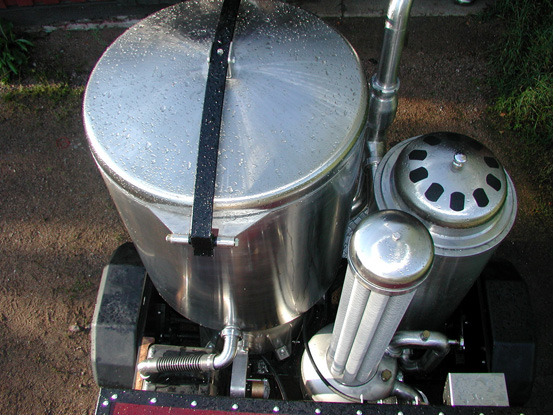

Principe
Utilisation des gaz issus de la combustion incomplète de bois comme carburant dans des moteurs à essence.
Développé intensément pendant la 2^ème guerre mondiale pour pallier au manque de carburant, le gazogène est depuis tombé dans l’oubli. Les développements récents sont tournés vers la production d’énergie à partir de biomasse, dans des unités fixes de grande taille (usines). Seuls quelques passionnés ont continué à développer ces systèmes pour les véhicules, et parmi eux, les travaux de M.Vesa Mikkonen (site web) nous permettent d’utiliser du bois résineux.

Implémentation
Idéalement, le gazogène est installé sur une remorque tractée par le véhicule.
Les véhicules adaptés à cet usage possèdent des moteurs essence de forte cylindrée, comme les véhicules Américains anciens par exemple.
La carburation doit être adaptée à ce nouveau carburant plus "pauvre" que l’essence, ainsi que le véhicule dans une moindre mesure.
Difficultés
-
obtention de l’introuvable copie du livre de Vesa Mikkonnen permettant de fabriquer un tel gazogène (mail envoyé)
-
achat outils de travail de l’acier inox (principalement) :
-
découpeuse à plasma
-
rouleuse de tôle
-
poste à souder Tig AC/DC
-
-
apprentissage soudure Tig sur inox
NB : Comme pour d’autres projets de ce FABeLABe, il ne s’agit que d'implémenter la solution conçue au préalable